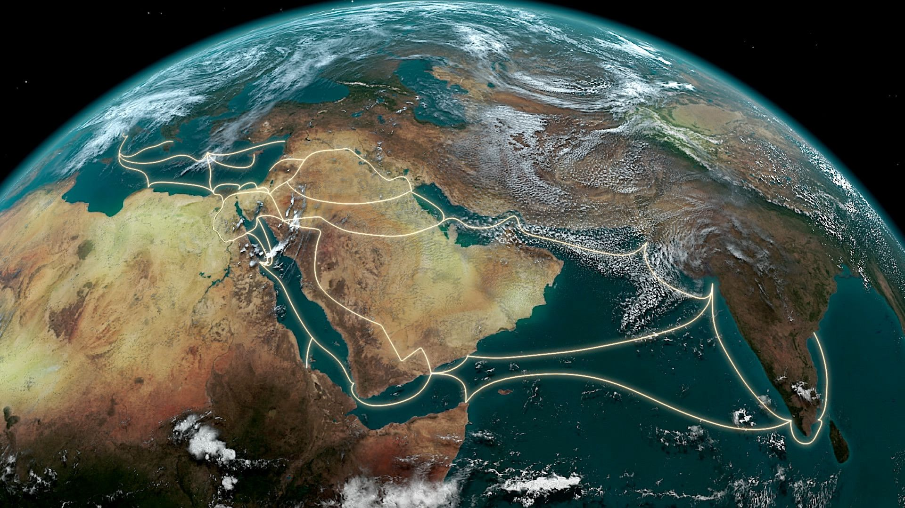

It is a branch of geography that focuses on studying the natural phenomena of the Earth, including landforms, climate, water resources, soil, vegetation, and the environmental factors affecting them. Physical geography aims to understand the natural processes that shape the Earth's surface and the changes that occur over time. It also seeks to analyze the interaction between the natural environment and human activities.
Geomorphology is the scientific study of the Earth's surface features and landforms, focusing on their origin, evolution, and the processes that shape them over time, such as erosion, weathering, and tectonic activities.
Climatology is the scientific study of climate, including the long-term patterns of temperature, precipitation, humidity, wind, and atmospheric conditions in a specific region or globally. It examines the factors influencing climate change and variations over time.
Hydrology is the scientific study of the movement, distribution, and properties of water on Earth, including its occurrence in rivers, lakes, groundwater, and the atmosphere. It focuses on the water cycle, water resources, and the impact of human activities on water systems.
Biogeography is the branch of geography that studies the distribution of living organisms, including plants and animals, across different regions of the Earth. It examines the influence of environmental factors, climate, and geological history on species distribution and ecosystems.
Soil Science is the study of soil as a natural resource, including its formation, classification, physical and chemical properties, and its role in ecosystems. It examines soil's interactions with plants, microorganisms, water, and the atmosphere, as well as its importance in agriculture and environmental sustainability.